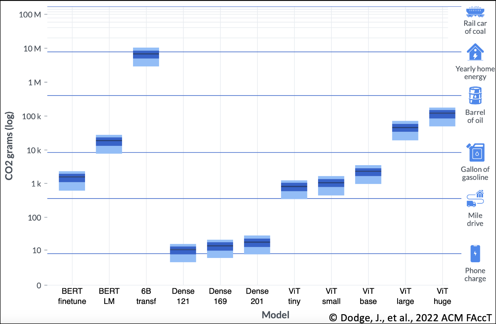

Aligning AI with Climate Change Mitigation
- Kaack, L. H., et al., Aligning Artificial Intelligence with Climate Change Mitigation, 2022 Nature Climate Change 518–527.
- Dodge, J., et al., Measuring the Carbon Intensity of AI in Cloud Instances, 2022 ACM Conference on Fairness, Accountability, and Transparency 1877–1894, arXiv:2206.05229.
Kaack et al. (2022) proposed a three-category framework for assessing the climate impact of ML.
- Computing-related impacts cover GHG emissions arising from electricity consumption for ML computations and embodied emissions associated with computing hardware.
Regarding electricity usage, it is essential to distinguish between the various life-cycle stages involved in ML model production. Model development is the most energy-intensive stage, requiring the identification of a suitable network architecture through trial-and-error training of several models. Once a specific model configuration has been chosen, model training and hyperparameter tuning are next. This stage isn’t as energy-demanding as model development but may need to be performed more frequently in practice.

Boxplot showing equivalent carbon intensities from training 11 different AI models in cloud instances. The y-axis (log-scale) measures electricity consumption in MWh translated into equivalent grams of CO\(_2\) emissions generated. The x-axis corresponds to various trialed models, including two BERT experiments (finetuning and language model pretraining), partial training of a 6.1 billion-parameter transformer model, three sizes of dense (or fully connected) neural networks, and five sizes of vision transformers. Light blue bars for each model mark the ranges of their respective equivalent emissions, where the top of the bar represents the maximum estimate and the bottom labels the minimum emissions. The heights of the dark blue rectangles contained in the light blue boxes measure interquartile ranges in equivalent emissions. The solid black lines in the dark blue rectangles for various models demarcate their respective average equivalent emissions (or energy consumption).
Dodge et al. (2022) measured the electricity consumption from training 11 different models covering natural language processing and computer vision applications. Notably, partial training (up to 13%) of a 6.1 billion-parameter transformer on 256 NVIDIA A100 GPUs for 8 hours used up an astounding 13.8 MWh of energy, i.e., equivalent to the annual electricity requirement of an average US home. Examining the above figure, the equivalent carbon emissions intensity of ML exhibits positive correlations with both the model size and the model complexity. Since foundation models with billions of trainable parameters are energetically expensive to build and train, one way to mitigate climate change is to adapt pretrained, open-source models (when possible) to custom domains via transfer learning or by using parameter-efficient tuning methods.
After model training, we have model inference, i.e., obtaining predictions on test data using a trained model. A single model inference task bears a negligible energy load. However, a model may need to be called thousands of times during deployment, leading to a cumulative energy budget for inference that can exceed those of model development and tuning. For instance, see numbers for Meta in Figure 4 of Wu et al. (2022).
As data centers and power systems shift increasingly to using renewable energy sources, emissions arising from ML computations are expected to diminish over time. Embodied emissions from computer infrastructure manufacturing, raw material transport, and end-of-life operations can then acquire increased relevance as a source of GHG emissions. For large data centers, embodied emissions comprise less than 10% of their total GHG emissions. Such centers typically replace servers every 3–4 years to maintain high operational efficiency. A potential downside to keeping new server lifespans short is that it may, in turn, spur growth in server manufacturing demand, thereby contributing to GHG emissions as an offset to gains in operational efficiency. These emissions can be mitigated by reusing old servers and equipment for small to mid-scale ML inference tasks.
Immediate application impacts encompass direct GHG emissions linked to short-term results of ML applications. Specifically, based on the use case, ML may increase or reduce GHG emissions. For instance, computer vision algorithms have helped combat deforestation by enabling enhanced tracking of forest land cover in satellite imagery (Finer et al., 2018). On the contrary, ML-assisted improvements to mining can speed up excavation of oil and natural gas reserves, leading to positive GHG emissions from accelerated fossil fuel exploitation.
System-level impacts refer to potential societal implications that could arise from long-term applications of ML. This category includes both rebound effects and the phenomenon of “lock-in”.
Rebound effects can occur when ML increases the efficiency of a service, thereby encouraging growth in the production of the same goods. For instance, ML-enabled autonomous driving can improve fuel efficiency. Still, it may lead to higher personal vehicle ownership rates, which can then increase GHG emissions unless such vehicles are shared or electrified.
The lock-in phenomenon is when an ML-enabled product reaches markets first and deters competitors from entering viable market spaces. Returning to our example of autonomous driving, demand for personal autonomous vehicles may result in a drop in private investment in mass public transit systems such as rail and buses, leading to more cars on the road.
Finally, ML may also influence society by altering the demand for goods and services. For example, a recommender system designed to increase profits for a company may boost the growth of products with embodied GHG emissions. Mandating GHG emissions monitoring and reporting for ML use cases will be essential to shape the design of climate policies governing the development, training, and large-scale deployment of AI models.